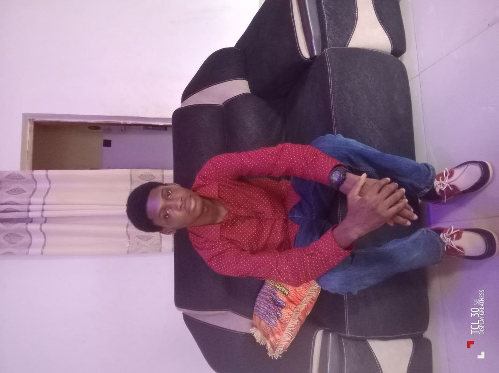

Destiny Ossai | WDD 130

My name is Destiny Ossai and i live in Benin City, Nigeria.I love playing sports and exercising. I am currently studying Web Design and Development and am curious to learn more about what this course has installed. Am looking forward to creating my personal website, increase my knowledge and working with many prestigious companies and industries.Driven by a passion for clean code and user-centered design, I aim to master both front-end and back-end technologies. Building a strong personal portfolio will allow me to showcase innovative digital solutions, collaborate with global tech teams, and contribute meaningful value to forward-thinking industries worldwide.